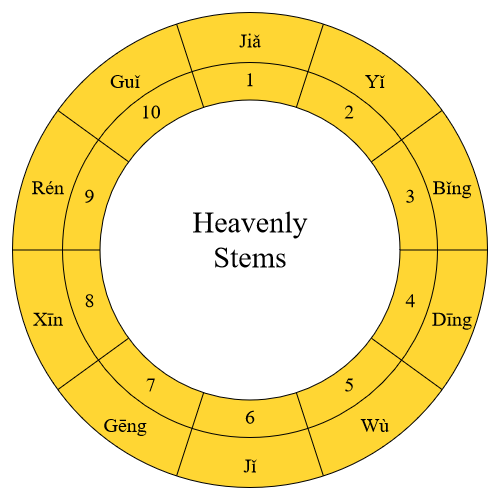
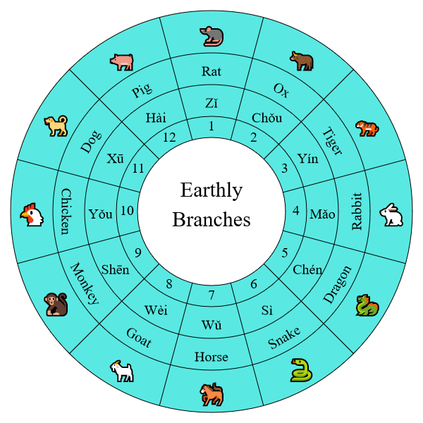

Sexagenary Cycle (六十干支)
First draft: October 2018 Last major update: July 7, 2019
Sexagenary cycle is an ancient Chinese counting system that is still being used today. It consists of two Chinese characters. The first character is taken from one of the ten heavenly stems (天干) and the other from one of the twelve earthly branches (地支). Each of the twelve earthly branches is associated with an animal (see the table below).
| Heavenly Stems | Earthly Branches | |||
|---|---|---|---|---|
| 1 | Jiǎ (甲) | 1 | Zǐ (子) | Rat |
| 2 | Yǐ (乙) | 2 | Chǒu (丑) | Ox |
| 3 | Bǐng (丙) | 3 | Yín (寅) | Tiger |
| 4 | Dīng (丁) | 4 | Mǎo (卯) | Rabbit |
| 5 | Wù (戊) | 5 | Chén (辰) | Dragon |
| 6 | Jǐ (己) | 6 | Sì (巳) | Snake |
| 7 | Gēng (庚) | 7 | Wǔ (午) | Horse |
| 8 | Xīn (辛) | 8 | Wèi (未) | Goat |
| 9 | Rén (壬) | 9 | Shēn (申) | Monkey |
| 10 | Guǐ (癸) | 10 | Yǒu (酉) | Chicken |
| 11 | Xū (戌) | Dog | ||
| 12 | Hài (亥) | Pig | ||
The counting starts with the number jiǎ zǐ (1,1), which is the first stem combined with the first branch. The next number is yǐ chǒu (2,2) — the second stem pairs with the second branch. It is followed by bǐng yín (3,3) and so on up to guǐ yǒu (10,10). We are now running out of stems. The rule is to start from the beginning whenever we are running out of stems or branches, just like the numbers in clocks. So the numbers after guǐ yǒu are jiǎ xū (1,11), yǐ hài (2,12), bǐng zǐ (3,1) and so on up to guǐ hài (10,12). The number after that is jiǎ zǐ (1,1) again and the cycle repeats. There are 60 numbers in a cycle, indicated in the table below.
| 1 | Jiǎ zǐ (甲子) | 21 | Jiǎ shēn (甲申) | 41 | Jiǎ chén (甲辰) |
| 2 | Yǐ chǒu (乙丑) | 22 | Yǐ yǒu (乙酉) | 42 | Yǐ sì (乙巳) |
| 3 | Bǐng yín (丙寅) | 23 | Bǐng xū (丙戌) | 43 | Bǐng wǔ (丙午) |
| 4 | Dīng mǎo (丁卯) | 24 | Dīng hài (丁亥) | 44 | Dīng wèi (丁未) |
| 5 | Wù chén (戊辰) | 25 | Wù zǐ (戊子) | 45 | Wù shēn (戊申) |
| 6 | Jǐ sì (己巳) | 26 | Jǐ chǒu (己丑) | 46 | Jǐ yǒu (己酉) |
| 7 | Gēng wǔ (庚午) | 27 | Gēng yín (庚寅) | 47 | Gēng xū (庚戌) |
| 8 | Xīn wèi (辛未) | 28 | Xīn mǎo (辛卯) | 48 | Xīn hài (辛亥) |
| 9 | Rén shēn (壬申) | 29 | Rén chén (壬辰) | 49 | Rén zǐ (壬子) |
| 10 | Guǐ yǒu (癸酉) | 30 | Guǐ sì (癸巳) | 50 | Guǐ chǒu (癸丑) |
| 11 | Jiǎ xū (甲戌) | 31 | Jiǎ wǔ (甲午) | 51 | Jiǎ yín (甲寅) |
| 12 | Yǐ hài (乙亥) | 32 | Yǐ wèi (乙未) | 52 | Yǐ mǎo (乙卯) |
| 13 | Bǐng zǐ (丙子) | 33 | Bǐng shēn (丙申) | 53 | Bǐng chén (丙辰) |
| 14 | Dīng chǒu (丁丑) | 34 | Dīng yǒu (丁酉) | 54 | Dīng sì (丁巳) |
| 15 | Wù yín (戊寅) | 35 | Wù xū (戊戌) | 55 | Wù wǔ (戊午) |
| 16 | Jǐ mǎo (己卯) | 36 | Jǐ hài (己亥) | 56 | Jǐ wèi (己未) |
| 17 | Gēng chén (庚辰) | 37 | Gēng zǐ (庚子) | 57 | Gēng shēn (庚申) |
| 18 | Xīn sì (辛巳) | 38 | Xīn chǒu (辛丑) | 58 | Xīn yǒu (辛酉) |
| 19 | Rén wǔ (壬午) | 39 | Rén yín (壬寅) | 59 | Rén xū (壬戌) |
| 20 | Guǐ wèi (癸未) | 40 | Guǐ mǎo (癸卯) | 60 | Guǐ hài (癸亥) |
Because of the cyclic nature of the stems, branches and sexagenary numbers, Tables 1 and 2 are not the best way to list them. A better way to represent them is to arrange them in rings, as shown in the diagrams below.
 

It is apparent from these diagrams that each of the stems, branches, and sexagenary numbers is on an equal footing. The orders of the lists are somewhat arbitrary and are purely determined by conventions.
Sexagenary cycle is used to label years, months, days and times, although the cycle for months, days and time are no longer in common use today.
Sexagenary Year Cycle
Chinese years are usually labelled by its sexagenary cycle. They repeat every 60 years. The most recent cycle started in the Chinese year jiǎ zǐ in 1984.
The sexagenary number of a Chinese year in a particular Western year can be computed easily using modular arithmetic. When I say a Chinese year in a particular Western year, I mean the Chinese year whose New Year day is closest to Jan. 1 in the Western year. For example, the Chinese year in 2018 refers to the year wù xū that begins on February 16, 2018 and ends on February 4, 2019.
From the cycles of the stems and branches and the fact that the year was jiǎ zǐ in 1984, it is easy to deduce that the stem number of a Chinese year in Western year y is 1 + mod(y+6, 10) and the branch number is 1 + mod(y+8, 12). Here mod(X,Y) denotes the remainder of X divided by Y. According to these formulae, the stem number of the Chinese year in 2018 is 5, which is wù. The branch number is 11, which is xū. So the sexagenary number of the year is wù xū.
Jiàn and the "Three Standards"
The jiàn (建) of a month refers to its branch name. A leap month does not have a branch name. Since there are only 12 regular months (not counting leap months) in a year, each month has its unique branch name. The (jiàn) zǐ month is defined as the month that contains the winter solstice. The chǒu month is the regular month after the zǐ month and so on. The zǐ month is the present-day month 11, chǒu month is month 12 and so on.
Legend has it that the first month of a year changed several times in the early periods of Chinese history. It was said that the yín month, the second regular month after the zǐ month, was designated as the first month of a year in the Xia dynasty (c. 2000 BCE – c. 1600 BCE). It was switched to the chǒu month in the Shang dynasty (c. 1600 BCE – c. 1046 BCE) and to the zǐ month in the Zhou dynasty (c. 1046 BCE – 249 BCE). These three different numbering systems are called the "three standards" (三正). The Xia standard labels the yín month as month 1. The Yin standard labels the chǒu month as month 1 (Yin is another name for the Shang dynasty). The Zhou standard labels the zǐ month as month 1.
It is now generally believed that the legend of three standards is not to be trusted. In the Warring States period (480 BCE – 222 BCE), China was divided into many states and each state used its own calendar. It is believed that there were mainly six calendars being used at that time. They are collectively called gǔliùlì (古六曆) or ancient six calendars. These six calendars were Zhou, Lu, Huangdi, Yin, Xia and Zhuanxu. These calendars were all developed around the Warring States period, not in different earlier periods. The so-called three standards were simply the three different numbering systems used by the Zhou, Yin and Xia calendars. They were the three numbering systems used in different regions at that period, not numbering systems used in three earlier periods.
The calendar used in the Qin dynasty (221 BCE – 207 BCE) adopted the same numbering system as the Zhuanxu calendar. The first month was the hài month, but it was labelled as month 10 following the Xia standard. The numerical order of the months in a year was 10, 11, 12, 1, 2, ..., 9. When the Han dynasty was established in 206 BCE, the calendar system remained unchanged until 104 BCE when it was decided to follow the Xia standard to designate the yín month as the first month of a year. From then on, the yín month has been the first month most of the time, except during several short periods of time in which the Yin standard and Zhou standard were used. Hence the zǐ month corresponds to month 11, chǒu month is month 12, yín month is month 1, ..., and hài month is month 10.
Finally, I should mention that the term jiàn means the handle of the big dipper asterism, which consists of the three stars Alkaid, Mizar and Alioth (see Figure 1 below). Directions may be labeled by the 12 earthly branches by dividing the horizon circle into 12 evenly spaced directions. The convention is to label the north direction by zǐ, east by mǎo, south by wǔ, west by yǒu and so on (see Figure 2 below). Before the 7th century, the big dipper stars were closer to the celestial north pole than today. They were always above the horizon as observed in the Central Plains China (around latitude 35°N). They were circumpolar stars. In the evening around the winter solstice, the handle of the dipper pointed towards north (the zǐ direction). That was the reason why the month containing the winter solstice was called the jiàn zǐ month. Because of the precession of Earth's spin axis, the dipper stars have moved further away from the celestial north pole. Today, in the evening around the winter solstice at 35°N latitude, Alkaid is below the horizon; Mizar and Alioth are very low near the northern horizon. To see the dipper's handle pointing north, one has to travel to a region north of 41°N.
Sexagenary Month Cycle
Sexagenary month cycle is a bit tricky. According to this Wikipedia article, there are two systems of sexagenary months. The first system is used in the calendar webpage. In fact, the sexagenary month cycle was rarely used even in ancient historical records. It was mainly used by astrologers. The calendar page lists the sexagenary month cycle after 103 BCE. I include the discussion here for completeness.
System 1
This system uses the Chinese months as the dividing line to label the month cycle. A leap month does not have its own sexagenary label. The sexagenary number in a leap month is the same as its preceding month. The branch of a month is its jiàn name. When the branch of a month is paired with a stem, the sexagenary month cycle results and it repeats every 60 regular months, or five Chinese years. Since the stem name of a year repeats every 10 years, there is a 2-1 relationship between the stem name of a year and the stem name of each of the 12 months in the year. For example, the sexagenary number of the first month in the year of jiǎ and jǐ is always bǐng yín, the second month is always dīng mǎo and so on. The following table lists the relationship.
| Stem of a year | Stem of the first month |
|---|---|
| Jiǎ/Jǐ (甲/己) | Bǐng (丙) |
| Yǐ/Gēng (乙/庚) | Wù (戊) |
| Bǐng/Xīn (丙/辛) | Gēng (庚) |
| Dīng/Rén (丁/壬) | Rén (壬) |
| Wù/Guǐ (戊/癸) | Jiǎ (甲) |
With this table, it is easy to calculate the sexagenary number of any month in a Chinese year. As an example, let's see how the sexagenary number of the 5th regular month in the Chinese year in 2018 can be calculated. The sexagenary cycle of the year in 2018 is Wù xū. It follows from the table that the stem of the first month is jiǎ. The stem of the 5th regular month is the 4th stem after jiǎ in the list of heavenly stems, which is wù. The branch name of month 5 is always wǔ. Hence the sexagenary number of the 5th month in the year wù xū is wù wǔ.
In Chinese, a song was created as a mnemonic to help people memorize the table. However, I find it easier just to remember that the stem name of the first month of a jiǎ year is bǐng. The stem name of the other months can be deduced by counting the number of regular months from a jiǎ year. For example, let's calculate the sexagenary number of the 5th (regular) month in the year wù xū. Wù is the fourth stem after jiǎ, so the 5th month from a wù year is the (5 + 12×4)th, or 53th regular month from a jiǎ year. So its stem is mod(52, 10) or 2 stems after bǐng, which is wù. Hence the sexagenary number of the 5th month in the year wù xū is wù wǔ.
This system was used in the imperial calendars issued by the governments in the Ming and Qing dynasties. It's also used in modern calendars. As stated above, a leap month does not have a branch name. According to the rules in the imperial calendars in the Ming and Qing dynasties, two sexagenary month cycles were used in a leap month. A leap month does not contain a major solar term, but it has a minor solar term in the middle of the month. The rule was that the sexagenary month cycle of the previous month was used before the minor solar term and the month cycle of the following month was used after the minor solar term.
System 2
In this system, the month cycle is not associated with the calendrical month but with the minor solar terms (see the 24 solar terms page for an explanation of the 24 solar terms). The 24 solar terms are based entirely on the motion of the Sun, so it is a month system of a solar calendar. In ancient China, the period between two successive winter solstices was called a suì (歲), whereas the period between two successive Chinese New Year days was called a nián (年). The concept of suì is entirely based on the motion of the Sun. The length of a suì is 365 days or 366 days with an average close to the tropical year (365.242 days). By contrast, nián takes into account both the motion of the Sun and the phases of the Moon. The length of a nián varies from about 354 days (normal years) to about 384 days (years with a leap month).
In this system, there are 12 months in a suì, each month has approximately 30 or 31 days. The branch name of each month in a suì is fixed. The month with branch name zǐ is the period between the minor solar terms J11 (大雪) and the day before J12 (小寒). The month with branch name chǒu is the period between J12 (小寒) and the day before J1 (立春) and so on. The following table lists the periods of the 12 months, their approximate Chinese months, and their approximate dates in Gregorian calendar. In the table, J11–J12 means the period between J11 and the day before J12 and so on.
| Branch of the Month | Period | Approx. Chinese Month | Approx. Gregorian Dates |
|---|---|---|---|
| Zǐ (子) | J11–J12 (大雪–小寒) | Month 11 | Dec. 7 – Jan. 5 |
| Chǒu (丑) | J12–J1 (小寒–立春) | Month 12 | Jan. 6 – Feb. 3 |
| Yín (寅) | J1–J2 (立春–驚蟄) | Month 1 | Feb. 4 – Mar. 5 |
| Mǎo (卯) | J2–J3 (驚蟄–清明) | Month 2 | Mar. 6 – Apr. 4 |
| Chén (辰) | J3–J4 (清明–立夏) | Month 3 | Apr. 5 – May 5 |
| Sì (巳) | J4–J5 (立夏–芒種) | Month 4 | May 6 – Jun. 5 |
| Wǔ (午) | J5–J6 (芒種–小暑) | Month 5 | Jun. 6 – Jul. 6 |
| Wèi (未) | J6–J7 (小暑–立秋) | Month 6 | Jul. 7 – Aug. 7 |
| Shēn (申) | J7–J8 (立秋–白露) | Month 7 | Aug. 8 – Sep. 7 |
| Yǒu (酉) | J8–J9 (白露–寒露) | Month 8 | Sep. 8 – Oct. 7 |
| Xū (戌) | J9–J10 (寒露–立冬) | Month 9 | Oct. 8 – Nov. 6 |
| Hài (亥) | J10–J11 (立冬–大雪) | Month 10 | Nov. 7 – Dec. 6 |
Note that the dates of the 24 solar terms are almost the same in the Gregorian calendar. So the Gregorian dates of these months fluctuate by only about one day from year to year. However, the start and end days of the months in this system can fluctuate up to about 30 days in the Chinese calendar. This means that the months in this system do not in general coincide with the months in the Chinese calendar. When paired with the heavenly branches, the sexagenary months have a cycle of 60 months, or 5 suì's.
Sexagenary Days
Sexagenary days have a cycle of 60 days. Sexagenary numbers have been used to record dates in China for more than 2700 years. The system has not been interrupted and no mistakes have been made.
The sexagenary number of a day can be easily determined if we know the Julian day number, which is the number of days counting from noon on January 1, 4713 BCE. Hence Julian dates at noon are integers. A time zone is not specified here and it is assumed that the time origin (noon on January 1, 4713 BCE) and the time at noon on any day are both in the same time zone. There are algorithms to convert a Gregorian/Julian date to the Julian date (see e.g. Wikipedia). I also created a web-based Julian and sexagenary date calculator.
To calculate sexagenary dates from Julian dates, we only need to know the sexagenary date of a particular Julian date and then use modular arithmetic to derive a formula establishing the relationship between Julian dates and sexagenary dates. From the 2019 calendar, we see that the sexagenary date of January 27, 2019 was jiǎ zǐ (the first sexagenary number). The Julian date of Jan 27, 2019 at noon was 2458511. Since sexagenary dates have a cycle of 60 days and mod(2458511, 60) = 11, it follows from modular arithmetic that
Sexagenary date number S = 1 + mod(JDnoon - 11, 60) (1)
Here JDnoon is the Julian date at noon. Sexagenary number 1 refers to jiǎ zǐ, 2 refers yǐ chǒu, 3 refers to bǐng yín and so on. That is, S refers to the numerical order of the sexagenary name listed in Table 2 above. If T denotes the numerical order of the stem name in Table 1 and B denotes the numerical order of the branch name in Table 1, they are related to S by
T = 1 + mod(S-1, 10), B = 1 + mod(S-1, 12). (2)
While the sexagenary number S was occasionally useful in some computation in ancient Chinese almanacs, it's mostly not needed. The values of T and B can be computed from JDnoon directly. The formulae can be derived from the fact that the sexagenary date of JDnoon=2458511 was jiǎ zǐ (T=1 and B=1). Since heavenly stems have a cycle of 10 days, earthly branches have a cycle of 12 days, mod(2458511, 10)=1 and mod(2458511, 12)=11, it follows that
T = 1 + mod(JDnoon-1, 10), B = 1 + mod(JDnoon+1, 12). (3)
Since we are using the base-10 system, T is simply the last digit in JDnoon, with the exception that T=10 if the last digit is 0. As an example, JDnoon=2371629 on March 13, 1781. We have T=9 and the stem name is rén; B = 1 + mod(2371630, 12) = 11 and the branch name is xū. So the sexagenary day cycle was rén xū.
As a side note, the days of week can also be calculated easily from JDnoon. Since Jan 27, 2019 was Sunday with JDnoon=2458511 and mod(2458511, 7)=6, it follows that the day of week of a day with JDnoon is given by
W = mod(JDnoon+1, 7) (4)
Here W=0 means Sunday, W=1 means Monday, ..., W=6 means Saturday. The days of week in the calendar page are calculated using Equation (4).
As another side note, given the sexagenary number S, the stem number T and branch number B can be calculated easily using Equation (2). However, the inverse problem is not so easy. Given T and B, S has to be determined by solving the modular arithmetic equations
S ≡ T (mod 10), S ≡ B (mod 12).
Here ≡ represents congruence. The above equations simply mean that S-T is divisible by 10 and S-B is divisible by 12. For those who are not familiar with modular arithmetic, it might not be easy for them to derive a general expression for S. For a specific pair of T and B, one can of course look up Table 2 to find the answer. If this is considered as "cheating", one may use the following formula instead:[1]
k = 6T - 5B, S = k if k>0 and S = k + 60 if k≤0.
It's also easy to prove that T-B must be an even number, k>0 is equivalent to T≥B and k≤0 is equivalent to T<B.
Take the result rén xū calculated above as an example. We have T=9 and B=11, so k=6×9-5×11=-1. We thus have S=59, which agrees with Table 2.
The above modular arithmetic equations are not difficult. I haven't studied the theory of modular arithmetic formally, but I managed to derive the solution without difficulty. That's because it doesn't require the use of any sophisticated algorithm in modular arithmetic to solve the equations.[2] A slightly harder question appeared in the book Sunzi Suanjing (《孫子算經》) written in the third century:
There are an unknown number of things. The remainder is two when counted by threes, three when counted by five, and two when counted by seven. Find the unknown number.
Written in modern mathematical language, the equations for the unknown integer x are[3]
x ≡ 2 (mod 3), x ≡ 3 (mod 5), x ≡ 2 (mod 7).
Almanac calculations in ancient China often involved modular arithmetic, especially the computation of the Shàngyuán. The Chinese remainder theorem was discovered and algorithms were constructed from the study of modular arithmetic problems in ancient China.
Sexagenary Cycle for Time
In the past, Chinese people divided a day into 12 (double) hours. So each (double) hour has a unique branch name. The zǐ hour corresponds to the modern-day time period 23:00-1:00, chǒu hour corresponds to 1:00-3:00, yín 3:00-5:00 and so on. More often only the branch names were used to specify the time in a day. When paired with the heavenly stems, the sexagenary hours have a cycle of 60 (double) hours or 5 days. As a result, the stem name of an hour and the stem name of a date are correlated in a similar way as the month and year described above. There is an analogous table for the relationship. However, I find it more convenient to just remember that the stem name of the zǐ hour in a jiǎ day is always jiǎ. The stem name of any other hours can be deduced by counting the number of hours from a jiǎ day. As an example, the wèi hour (13:00-15:00) in a dīng day is the (8 + 12×3)th hour or 44th hour from a jiǎ day, so its stem is the third stem from jiǎ, which is dīng. So the sexagenary number is dīng wèi.
Footnotes
[1] It is easy to verify that the solution satisfies the equations in (2). First write
S = 6T - 5B + 60n, where n=0 if T≥B and n=1 if T<B.
We can write B = T + 2j for some integer j since T and B differ by an even number. Substituting B = T + 2j to the S expression gives
S = T - 10j + 60n.
Since both 10j and 60n are divisible by 10,
mod(S-1, 10) = mod(T-1, 10) = T - 1, which is the first equation in (2). The last equality holds because T-1 is an integer between 0 and 9. Similarly, substituting T = B - 2j into the S expression gives
S = B - 12j + 60n. Since 12j and 60n are divisible by 12,
mod(S-1, 12) = mod(B-1, 12) = B - 1, which is the second equation in (2).
[2] Here is how I derive the expression. The modular arithmetic equations can be expressed as
S = T + 10i, S = B + 12j for some integers i and j.
⇒ T + 10i = B + 12 j
⇒ 6j - 5i = (T-B)/2.
Obviously i=j=(T-B)/2 is a solution. So
S = T + 10i = T + 5(T-B) = 6T - 5B, but the number is negative or 0 when T<B, in which case 60 has to be added to it in order for S∈[1,60].
The key step is to find two integers p and q that solve the equation 6p - 5q = 1. If p and q are found, multiplying them by (T-B)/2 will provide a solution for i and j. In this case, it's obvious that p=q=1 is a solution. If the equation were ap - bq = 1 with other integers a and b, it might not be so easy to guess the solution. One will in general have to use the extended Euclidean algorithm to solve the equation.
[3] Consider more general equations:
x ≡ a (mod 3), x ≡ b (mod 5), x ≡ c (mod 7),
with a∈[0,2], b∈[0,4] and c∈[0,6], i.e. a, b, and c are the remainders of x divided by 3, 5 and 7, respectively. Sunzi Suanjing provides the following solution:
x = 70a + 21b + 15c - 105n, where n is an arbitrary integer.
The expression can be derived using the Chinese remainder theorem. However, it's relatively easy to verify that this solution indeed solves the equations. Since 21b, 15c and 105n are all divisible by 3, we have mod(x,3) = mod(70a, 3) = mod(3×23a+a,3) = mod(a,3)=a. Similar calculations give mod(x,5)=b and mod(x,7)=c.